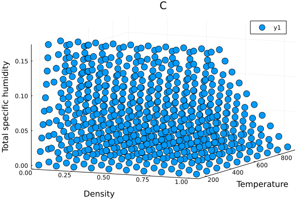
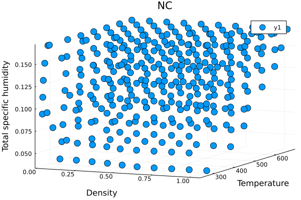
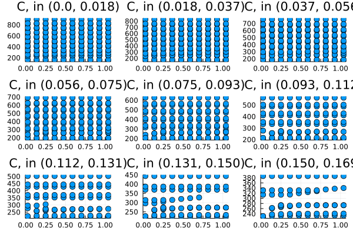
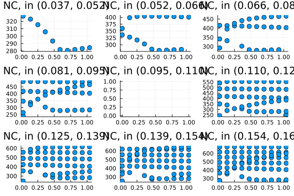

Input space exploration
In the Tested Profiles section, we plotted the tested thermodynamic states. In this section, we explore the convergence of the input space beyond what is tested. In particular, rather than being interested in physically meaningful combinations of constructor inputs (e.g., ρ, e_int, q_tot), we are interested in all permutations of inputs within a given range of ρ, e_int, q_tot. Some of these permutations may not be physically meaningful, or likely to be observed in climate simulations, but showing the convergence space helps illustrate the buffer between our tested profiles and the nearest space where convergence fails.
include(joinpath(@__DIR__, "..", "ThreeDimensionalInput.jl"))┌ Warning: Note that the temperature axis for the non-converged
│ plot is not necessarily accurate, since the temperatures are
│ the result of a non-converged saturation adjustment
└ @ Main ~/work/Thermodynamics.jl/Thermodynamics.jl/docs/ThreeDimensionalInput.jl:93Converged cases (3D view)

Non-converged cases (3D view)

Converged cases (2D view), binned by total specific humidity

Non-converged cases (2D view), binned by total specific humidity
